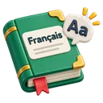

Fiche de révision · Français · CEB 6e primaireLire : fait, opinion, intention
La règle
- Un fait peut être vérifié par tout le monde.
- Une opinion dépend de la personne (beau, monstrueux, le meilleur…).
- Intention de l'auteur : informer, persuader, enjoindre (donner des consignes), donner du plaisir (raconter, faire rire).
Exemple
Recette = enjoindre. Article sur la tour Eiffel = informer. Bande dessinée = donner du plaisir.
 Astuce
Astuce
Cherche les mots qui jugent (beau, horrible) : ils montrent une opinion.
Comprendre la règle
Avant de lire un texte en détail, demande-toi pourquoi l'auteur l'a écrit : c'est son intention dominante. Au CEB, il y en a quatre : informer (renseigner, expliquer), persuader (convaincre de penser ou d'acheter quelque chose), enjoindre (faire agir : consignes, recette, règlement), donner du plaisir (raconter, faire rire, émouvoir).
Les indices : un texte qui informe donne des faits, des dates, des chiffres, souvent avec des intertitres. Un texte qui enjoint parle à l'impératif ou à l'infinitif (« Casser le chocolat »). Un texte qui persuade donne des arguments et des avis (« le meilleur », « il faut absolument »). Un récit inventé, avec des personnages et des dialogues, donne du plaisir.
Un fait peut être vérifié par tout le monde ; une opinion est l'avis d'une personne. Un même document peut mêler plusieurs intentions : une page de livre de cuisine peut contenir une recette (enjoindre) et un encadré « Le saviez-vous ? » (informer). Pour juger un article, repère aussi sa source : auteur, nom du journal ou du magazine, date.
Exemples expliqués
- « La tour Eiffel a été construite pour l'Exposition universelle de 1889. » Un fait : on peut le vérifier.
- « C'est le plus beau monument du monde. » Une opinion : « le plus beau » dépend de la personne.
- La règle d'un jeu de société. Enjoindre : elle dit au joueur ce qu'il doit faire.
- « Le meilleur gouter pour être en forme ! » sur une affiche. Persuader : la publicité veut te faire acheter.
Les pièges du CEB
- Choisir « donner du plaisir » parce que le texte est agréable à lire : un documentaire passionnant reste un texte qui informe.
- Confondre informer et persuader : un texte qui informe ne te demande pas de changer d'avis ni d'acheter.
- Se laisser guider par un détail : on cherche l'intention de tout le texte.
- Dans une source, confondre l'éditeur et le nom du magazine.
Ce que le CEB t'a déjà demandé
La question « Quelle est l'intention dominante de l'auteur ? » revient presque chaque année.
- CEB 2016 · livret 1 · question 1 Un conte inventé pour amuser : donner du plaisir. Voir l'examen
- CEB 2017 · livret 1 · question 1 « La Belgique, ses arts et ses loisirs » donne des dates, des noms et des explications : informer. Voir l'examen
- CEB 2024 · livret 8 · question 13 La recette fait agir (enjoindre) ; les encadrés « Le saviez-vous ? » informent. Voir l'examen
- CEB 2026 (socles et tronc commun) · livret 6 · question 1 La source de l'article : Annalisa Plaitano, magazine Cosinus, janvier 2023. Éditions Faton est l'éditeur, pas le nom du magazine. Voir l'examen : socles · tronc commun